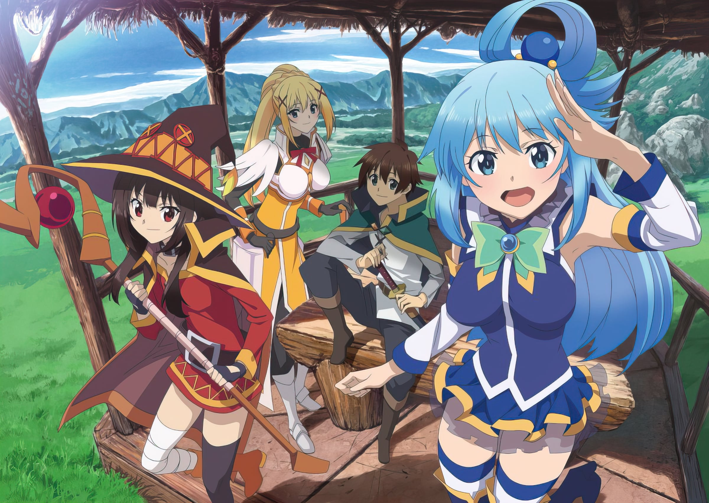
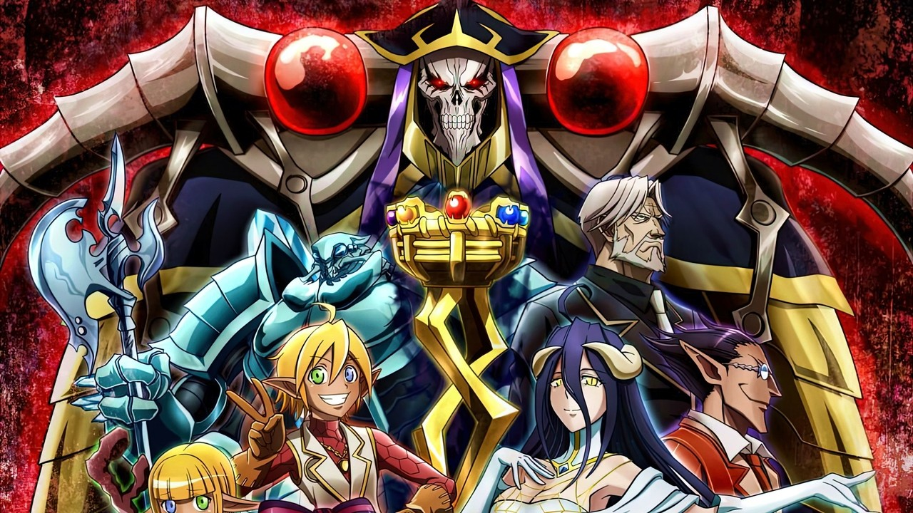
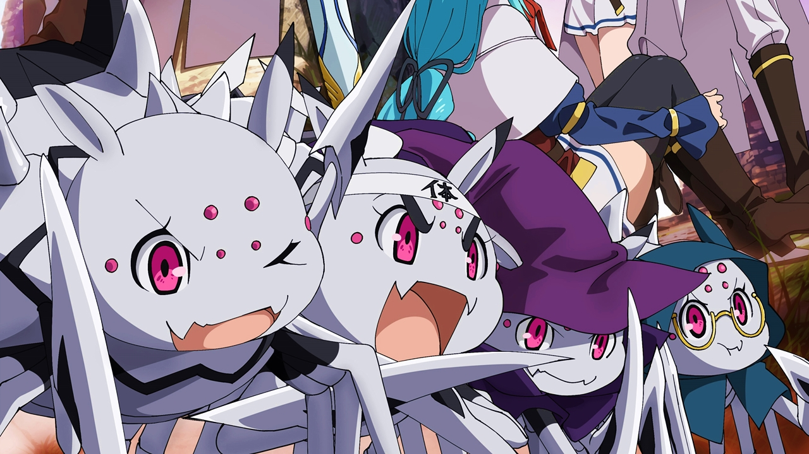
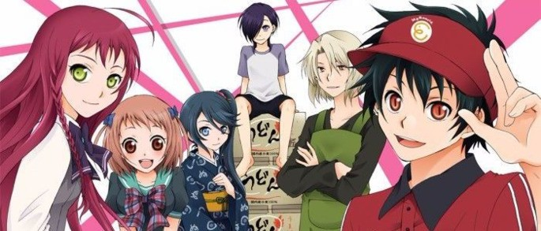
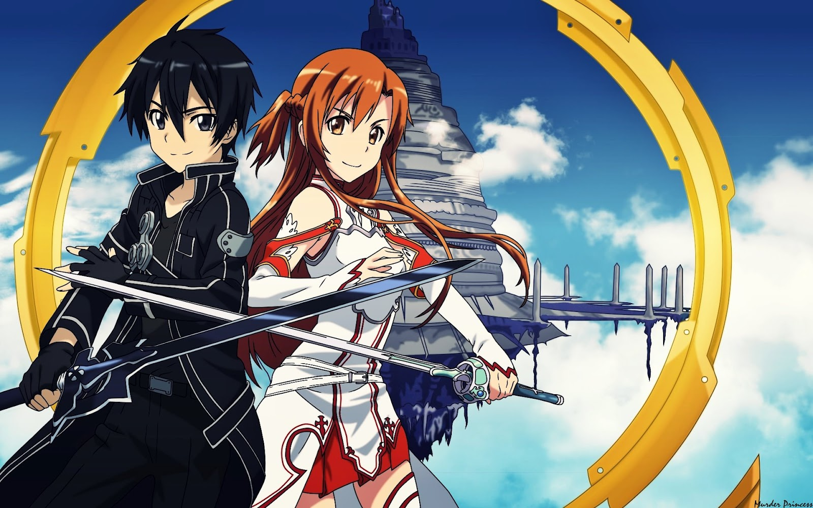

Los mejores animes del género isekai
KONO SUBARASHII SEKAI NI SHUKUFUKU WO!
Luego de morir de forma humillante, el estudiante recluso Kazuma Satou se halla a sí mismo ante la diosa Aqua. Ella le da dos opciones, o seguir hacia el cielo, o tener una vida nueva en un mundo mágico. Por supuesto, Kazuma decide reencarnar, convirtiéndose en un guerrero con la tarea de salvar al mundo del mal. Para hacer el tema más complicado, Aqua también está en este universo, y Kazuma pronto descubrirá que la "diosa" es una completa inútil como compañera. Este además de ser un isekai muy interesante con todo el tema de la sobrevivencia de Kazuma en el factor que resalta es en su grandiosa comedia es tan buena que la categorizaria al lado de las 3 mejores
OVERLORD
Yggdrasil, un famoso juego de realidad virtual está a punto de desaparecer. Momonga, un poderoso mago dentro del mismo, decide pasar los últimos momentos dentro de los servidores. A pesar de que se supone que el juego ya no existe, Momonga sigue dentro de su personaje, completamente consciente... y los NPC parecen haber desarrollado personalidades propias. El personaje principal decide tomar las riendas de este nuevo mundo, al mismo tiempo que se pregunta si hay otros en la misma situación que él. El dominio del protagonista es grandioso a pesar de no tener ningun tipo de razon de liderazgo en su mundo anterior genero una gran desarrollo en sus habilidades
KUMO DESU GA, NANI KA?
La gran cantidad de sub generos que abarca el anime y la montaña rusa de emociones que desencadena la serie, pero una gran parte de tiempo se desarrolla con comedia. La historia tiene lugar en Edo (ahora conocida como Tokio), que ha sido conquistada por unos extraños seres extraterrestres llamados «Amanto». En su momento, los samuráis de entonces lucharon contra los invasores, pero después que los Amanto los hubieran derrotado prohibieron a todas las personas de la ciudad portar espadas. La obra se centra en las aventuras de un samurái conocido como Gintoki Sakata quien ayuda a un adolescente llamado Shinpachi Shimura a salvar a su hermana de un grupo de alienígenas que querían hacerla parte de un burdel. Impresionado con Gintoki, Shinpachi decide convertirse en su aprendiz y trabajar con él como un profesional independiente a fin de poder pagar la renta mensual del alquiler de Gintoki.
HATARAKU MAOU-SAMA!
¿Qué pasa cuando el diablo es transportado a un mundo sin magia y es obligado a trabajar como empleado a tiempo parcial en un local de comida rápida? Pues una comedia hilarante, sin duda.
SWORD ART ONLINE
En Sword Art Online los jugadores pueden controlar a sus personajes dentro del mundo virtual utilizando solamente sus pensamientos. Kirito es uno de los primeros jugadores en entrar, y dentro del mundo de Aincrad, descubre que no podrá salir de este nuevo mundo si no alcanza el nivel cien... pero no es el único.
